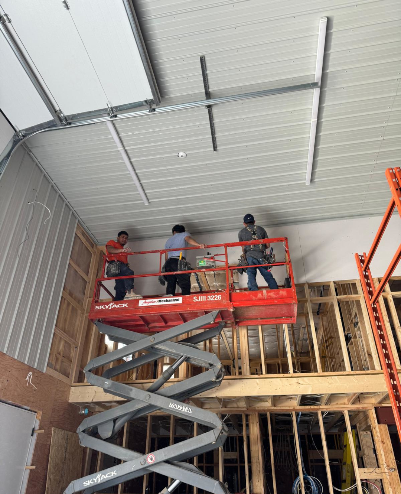
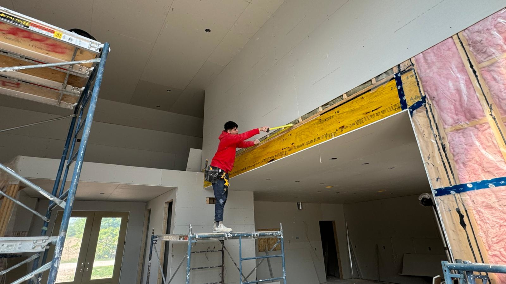
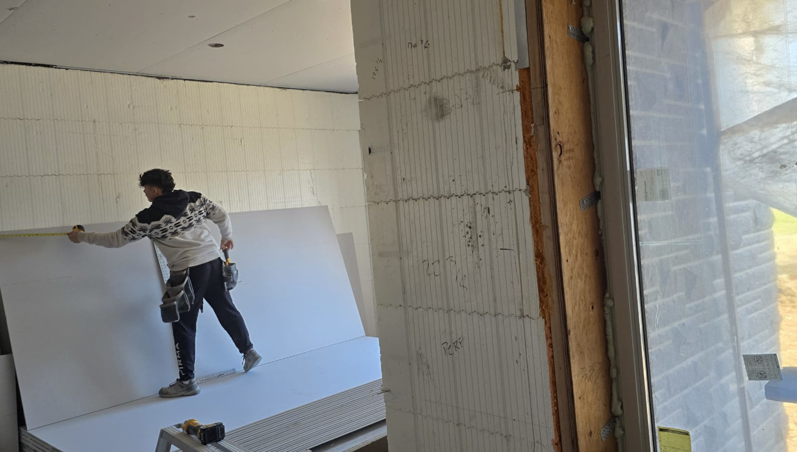

Nuestros Programas

Estructura Residencial
Construcción del armazón principal de viviendas,
incluyendo paredes, techos y pisos. Proporciona la base
estructural que da forma y soporte a toda la casa.

Estructura Comercial
Enfocada en armado estructural de edificios destinados
a uso comercial, como oficinas o tiendas, haciendo uso
de materiales y técnicas adaptadas a mayores dimensiones
y exigencias de seguridad.

Aislamiento
Instalación de materiales para regular temperatura interior,
mejoran la eficiencia energética y reducen el ruido.
Esencial para mantener el confort y disminuir el consumo
de energía.

Paneles de Yeso
Colocación de paneles de yeso sobre estructuras metálicas
o de madera para formar paredes y techos interiores.

Revestimiento de Paredes
Sellado y alisado de las uniones entre paneles de yeso
que prepara las superficies para pintura o decoración.

Techado
Incluye la instalación y reparación de cubiertas que protegen
las edificaciones de la lluvia, el sol y otros elementos climáticos.
Un buen techado garantiza durabilidad, aislamiento y seguridad estructural.